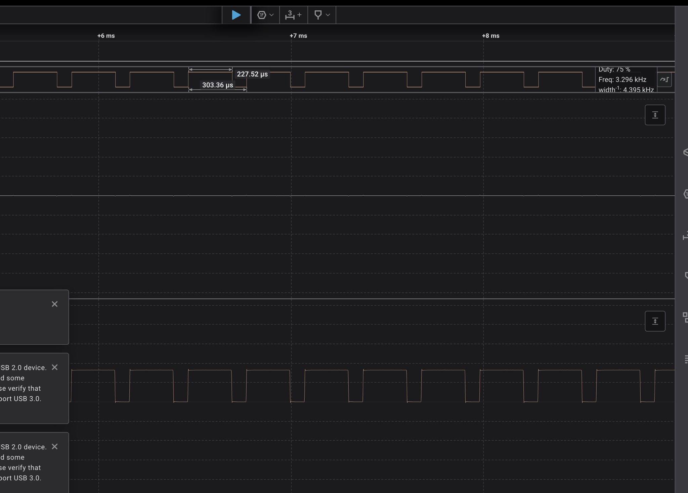
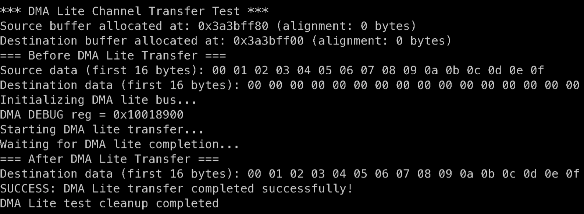

Gsoc Final Work Submission
Project Proposal: https://docs.google.com/document/d/1NreikYpimpCXKtAVqa8RMzbgOyQgtGw7x1CQlPVAtJY/edit?usp=sharing
Gitlab Activity: https://gitlab.rtems.org/users/skdatar/activity
Project Issue: https://gitlab.rtems.org/rtems/programs/gsoc/-/issues/81
Code contribution list:⌗
| Merge Request | Description |
|---|---|
| I2C (Polling) | Implemented polling-based I2C driver. |
| I2C (Interrupt) | Added TX interrupt support for I2C. |
| PWM Support | Implemented PWM driver, tested with logic analyzer & audio jack. |
| DMA Support | Added standard DMA, DMA Lite & DMA4 support (memory-to-memory). |
| Docs (PWM) | Documentation for PWM driver. |
| Docs (DMA) | Documentation for DMA driver. |
| Header Guards | Added C++ header guards to BSP header files. |
| Formatting Fix (raspberrypi.h) | Fixed formatting issues in include/bsp/raspberrypi.h. |
| Docs (I2C) | Documentation for I2C driver. |
Aim of the project⌗
The project aimed to have the support for I2C, PWM, DMA and Mailbox added to the Raspberry Pi 4b BSP.
I2C Support⌗
The I2C support was upstreamed in two separate MRs. One which implemented the Polling version. Another which added the TX Interrupt support to the driver.
I2C was tested on the MPU6050 as well as the logic analyser
Polling Merge Request: https://gitlab.rtems.org/rtems/rtos/rtems/-/merge_requests/363
Interrupt Merge Request: https://gitlab.rtems.org/rtems/rtos/rtems/-/merge_requests/682
PWM Support⌗
The PWM support was added and was tested using a logic analyser 
PWM1_x channels are routed to the audio jack. PWM1 was then tested using the Audio Output on the RaspberryPi
PWM Merge Request: https://gitlab.rtems.org/rtems/rtos/rtems/-/merge_requests/509
DMA Support⌗
The DMA Support was a very interesting part. During the coding period I could complete the memory-to-memory transfer. It involved a lot of cache management and handling control block structures.
Apart for the standard DMA there are two other types of DMA: DMA Lite and DMA4
All of these were tested for memory-to-memory transfer.
The standard DMA test:
DMA Lite test: 
DMA4 test:
DMA Merge Request: https://gitlab.rtems.org/rtems/rtos/rtems/-/merge_requests/662
Mailbox Support⌗
Preliminary work on the Mailbox was started, though not completed in the coding period.
Other Merged MRs⌗
- Documentation for DMA
- Documentation for PWM
- Adding C++ header guards for the BSPs header files
- Fix the formatting for the include/bsp/raspberrypi.h file
- Documentation for I2C
Future Work⌗
There is considerable work to be done on the Raspberry Pi BSP. The support for Mailbox is incomplete, the sdhci support from GSoC 2024 still remains to be completed. The BSP could also use support for Ethernet and USB.
I plan to continue working on the Raspberry Pi BSP in particular with RTEMS in general.
Conclusion⌗
The time I dedicated to working on the Raspberry Pi BSP, helped me gain a deeper understanding of the architecture and the hardware. It sharpened my coding skills, helped me understand open-source. I would like to thank my mentor: Kinsey and Christian for putting in the time and effort, helping me understand good coding practices, understand the intricacies of the hardware and reviewing my MRs. A huge thank you to Google for connecting students and contributors like me to organisations like RTEMS.